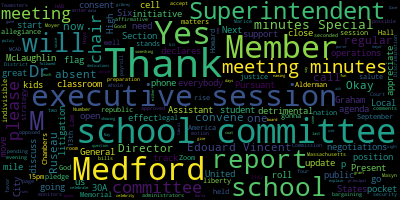
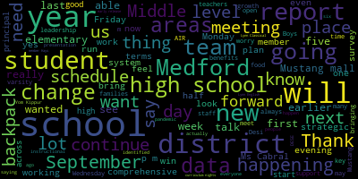
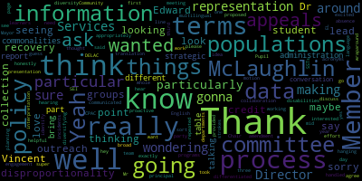

[North]: Okay, we'll get started.
[Lungo-Koehn]: This is the 13th regular meeting of the Medford School Committee, September 18, 2023, executive session at 5.15pm and regular meeting, close to 6, if we can get it, held at the Howard Alderman Memorial Chambers, Medford City Hall, as well as on Zoom. Member Ruseau, if you could call the roll, please.
[Ruseau]: Member Graham.
[Lungo-Koehn]: Here.
[Ruseau]: Member Hays.
[Lungo-Koehn]: Here.
[Ruseau]: Member Kreatz?
[Lungo-Koehn]: Here.
[Ruseau]: Member McLaughlin?
[Lungo-Koehn]: Here.
[Ruseau]: Member Mestone is on the phone. Yes?
[Lungo-Koehn]: No, we're gonna call her if we need her. Okay, so absent for now.
[Ruseau]: Member Ruseau, present. Mayor Lungo-Koehn.
[Lungo-Koehn]: Present. Six present, one absent for now. Please all rise to salute the flag. I pledge allegiance to the flag of the United States of America, and to the republic for which it stands, one nation under God, indivisible, with liberty and justice for all. We have negotiations and legal matters. Executive session, 5.15 p.m. Pursuant to General Law 30A, Section A.3, the Medford School Committee will convene an executive session to discuss the strategy and preparation for negotiations with Teamsters Local 25 security monitors and Local 25 administrators because an open meeting will have a detrimental effect on the bargaining position of the committee and the chair so declares. and Executive Session pursuant to General 30A, Section 21A3. The Medford School Committee will convene in Executive Session to discuss pending litigation before the Massachusetts Commission Against Discrimination, MCAD, and United States District Court, since an open meeting will have a detrimental effect on the litigation position of the committee, and the Chair so declares. The Medford School Committee will convene in public session after the Executive Session as close to 6 p.m. as possible. Is there a motion to enter and to accept? By Member McLaughlin, seconded by Member Hays. Roll call, please.
[Ruseau]: Member Graham?
[Lungo-Koehn]: Yes.
[Ruseau]: Member Hays?
[Lungo-Koehn]: Yes.
[Ruseau]: Member Kreatz?
[Lungo-Koehn]: Yes.
[Ruseau]: Member McLaughlin? Yes. Member Mustone is absent. Members herself? Yes. And Mayor Long-Leclair?
[Lungo-Koehn]: Yes. Six in the affirmative, one absent. We're going to go to executive session in room 207. Thank you.
[o9F0qYH9Geo_SPEAKER_05]: to any registered person.
[North]: We'll get going.
[Lungo-Koehn]: Good evening, everybody. We're on page two. We have the consent agenda. Number four, bills and payroll. Committee of the whole minutes 6-12-2023. Special school committee meeting minutes 6-14-2023. Special school committee meeting minutes 6-28-2023. Special school committee meeting minutes 7-19-2023. Special school committee meeting minutes 8-14-2023. regular school committee meeting minutes 9-11-2023.
[North]: Is there a motion on the floor? Moved by member Kreatz, seconded by member Rousseau.
[Lungo-Koehn]: All those in favor? All those opposed? Consent agenda has been approved. We do not have any reports of committees. We have report of our superintendent superintendent updates and comments. Dr. Marice Edouard-Vincent, Superintendent.
[Edouard-Vincent]: Good evening. We're meeting here today in the midst of the Jewish High Holy Days. This past weekend was Rosh Hashanah, the start of the new year, 5784. And next Monday is Yom Kippur. We wish all of our Jewish community members a happy new year and a meaningful holiday. As a reminder, school is closed next Monday, September 25th in observance of Yom Kippur. This evening, I'm looking forward to welcoming our high school principal, Ms. Marta Cabral, who will be providing us with an update on the start of school. Ms. Cabral has helmed the exciting and positive start of the school year at Medford High School. She'll be discussing several important school policy plans and the ongoing and upcoming opportunities for student engagement across grade levels, cohorts, and experiences. After the report from Ms. Cabral, members of the district leadership team will present the results of the comprehensive review conducted by AIR and the Massachusetts Department of Elementary and Secondary Education. This report published earlier this month by Desi highlights many great accomplishments and strengths in our district across a variety of measures. It also points out several key areas for growth, which I hope will help to guide this committee's strategic vision and leadership. Curriculum nights across the district. All four elementary schools in the McGlynn Middle School hosted curriculum nights in the past week. Principals have gratefully acknowledged a high level of family engagement in these open houses. The two remaining curriculum nights will be held at the Andrews Middle School tomorrow at 6 p.m. and at Medford High School on Thursday at 6 p.m. Early Release Wednesday. This Wednesday, September 20th, is the first half day of the school year. Middle schools will be released at 11.30 a.m. and all other schools will be released at noontime, 12 p.m. The district will be providing students with a cold food option on half days this year. The food will be provided during snack time at the elementary schools, and after dismissal at the middle and high schools and elementary students who prefer an alternative they're always welcome to bring in a healthy snack to school from home. The cafeterias will be open for students to sit and eat and students will be asked to sign up in the morning, so kitchen staff can prepare and have an accurate number of meals ready. Breakfast and lunch continue to be served free for all students. Thanks to the state law that was passed by the legislature and signed by Governor Healy earlier this year. Families do not need to sign up to receive free meals. With the exception of qualifying homeschooled families who can apply for a special P EBT food benefits until September 30 families can contact my office with questions. Athletics, I have lots of good news in the department of athletics. Boys and girls varsity cross country won their first meet last Thursday against Lynn English. Boys golf recorded an early win over Lynn English last Tuesday and gave a strong effort in a matchup later in the week against Lynn classical. Boys soccer notched a commanding victory over Lynn Classical and a close loss to North Andover in games last week. Girls varsity soccer shut out Lynn English 7-0 and contended against Lynn Classical in a scoreless draw. Girls' varsity and freshman volleyball ended the week on a high note with Friday night wins over Salem. Our boys' freshman football team defeated Cambridge Range and Latin at home on Saturday. At the middle school level, our girls' softball team earned a 7-0 triumph over Chelsea Middle Schools. And congratulations to all of our student athletes and coaches for their efforts, good sportsmanship, and love for the game. As always, go Mustangs. I also have some news to share about our Mustang mall. If you wanna show your support for the Medford Mustangs, consider picking up some Medford gear from the Mustang mall. The Mustang mall, is a school store run by our business marketing students at Medford High School. The storefront is open weekdays from 11 a.m. to 2.30 p.m. You can also shop online at mustang-mall.square.site and follow the store on Facebook, Instagram, and Twitter at the handle MHS underscore Mustang Mall. There are a few selected upcoming events that are happening. Again, this Wednesday, September 20th, district-wide early release day for all students K through 12. Friday, September 22nd, and Saturday, September 23rd is Run Medford being held at Hormel Stadium. And Mayor, you said Friday evening is at what time?
[Lungo-Koehn]: HAB-Masyn Moyer): Get the track dedications at 430 the kids fun runs start at 515 followed by the power mile and the mayor's celebrity mile and then everybody's gone to the board after to celebrate with Dave and gilbrey who were naming the track after.
[Edouard-Vincent]: HAB-Danny Teodorua here. HAB-Masyn Moyer): fabulous 630. Also, on Monday, September 25 I mentioned earlier there is no school again, all Medford public schools will be closed next Monday in observance of Yom Kippur, and other key events will be as always included in the Friday memo.
[Lungo-Koehn]: Thank you, Dr. Edouard-Vincent. Next up, we have report on the start of school operations at Medford High School. I'll invite Ms. Marta Cabral, our new principal, up to give us that update. Thank you.
[Cabral]: Hello, everyone. I want to thank you all for welcoming me again to Medford High School and to the Medford community. I want to thank students, staff, caregivers and the Medford community as a whole as well for welcoming me. I started my role as principal at Medford High School on July 1st and I spent the entirety of the month reviewing operations, structures, policies that were presently in place and former policies that were in place along with the program of studies. I held various listening sessions throughout the summer months. I had, I would say, about 50 caregivers that came in, along with students and several staff members that came in that wanted to have discussions about the past couple years at Medford High School, along with welcoming me and along with providing suggestions and feedback for moving forward. So what we're going to review today is really three shifts that we implemented at the high school this year with a lens of providing a restorative approach while still holding students accountable. So the three shifts that we're looking at are the attendance policy, as well as the cell phone policy and the backpack policy. Following that, we'll review different activities and how we are going to collect feedback throughout the year from both students and faculty and staff. So the first one that we're going to review is the attendance policy, which is really small. I wish I had a copy of it. Thank you. Um, so the attendance of unexcused absences per y that has been formally in did is we wanted to have approach to that because 13th unexcused absence, you would receive no credit for that course. And that could happen in quarter one or happen in quarter two. And what we wanted to do is really break that up so that students were, yes, still held accountable, but also with a lens of being restorative and being able to earn it back. So it's three unexcused absences per quarter. And if you look on the next slide, which I did have a lot of questions and clarified that what constitutes an unexcused absence. So an illness medical note that's the line in there on the second slide that what's excused and unexcused. So a parent or caregiver would need to call in to be able to excuse their student from an illness. I know previously it had been with a medical note, but we really wanted to look at it as an equity, through an equity lens that not everyone can go to the doctors immediately or get a doctor's appointment. So a call-in will do. If we see that there's a pattern, then we may have further discussions with caregivers and with students regarding the absences. So it's three unexcused absences per quarter. On the fourth, instead of no credit received, the earned grade, so these are students that have earned over a 59, will be dropped to a 59. That being said, they're able to earn it back quarter two and quarter three and quarter four as to being put on an attendance contract, meaning that they're not going to exceed those three excused absences the next quarter. If they do not, then they will be able to get their earned grade back. We will go back in and we will provide them their earned grade. We also want students to be able to self advocate for themselves. So we do have the attendance appeal process. So if a student has more than three unexcused absences at the end of the quarter, we will hold an attendance appeal. the people listed in the slide, the house assistant principal to that student, assistant principal of operations and engagement. We wanted one person that will be the same across all houses to be part of the appeal, a school Councilor for the house and the engagement specialist as well to be able to support that student in a supportive lens to get them back on track for attendance. I created a kind of flowchart for students to be able to easily look at it to say Okay, I have three unexcused absences what constitutes an unexcused absence and then go through the process of being able to attend an appeals board and what what that looks like. I put an example of what the attendance improvement contract looks like, and it's really just having check-ins so that school Councilors, engagement specialists, and assistant principals are able to support them throughout the month in any challenges that they may be encountering with being able to arrive to school. Do we want any? Do we want to do questions after each, or do you want me to continue with the different policies. I know that they're kind of three separate buckets. So, after each bucket will questions, member.
[Ruseau]: So, thank you. I really appreciate the clarity of all of this, I especially want to say I'm. The foresight about having one individual who's present across the houses. You know we've had issues where the same thing implemented across the houses hasn't been implemented in the same way so having that person there who will. have the experience of having done it in the other houses is fabulous will save us from the, the challenge we were certainly going to face in the future so I appreciate that. I also appreciate that this was actually, you know, the, the, the losing credit. That's not new. And I can't even remember but I think that's actually even more strict than this but I, so I appreciate that that is that the goal of this is not, you know, to penalize anybody it's to recognize that. you're not actually in the classroom, even if you're a high-performing student and you're not in the classroom, you will come to class and not know what was just spoken about. And just like with out-of-school suspensions, when we did that, the students who are not there, when they come back to class, diminish the education of every student in that room. And it doesn't matter if they were A students, They still don't know what happened, and they're going to use up those very important minutes to find out what did they miss. So I appreciate your approach to this. Thank you.
[Cabral]: Thank you.
[McLaughlin]: Member McLaughlin? Thank you. Thank you for the presentation. Yeah. I just wanted to ask how this policy is going to be differentiated for our other populations, for our English learners, our students with disabilities. For the appeals process in particular, I don't see any representation from those departments, and I'm wondering if that's been thought of or how that's gonna be handled.
[Cabral]: So what I should add in here is that a student can bring a staff member that they choose. So if they have a staff member or a teacher that they have a trusting relationship with and want them to be part of the appeals process that will be shared with them, the four that I stated in there will be no matter what. So we will make sure to communicate that with all of our students, that if they do have a particular person that they would like to go to the appeals board with, that they can bring. Same with translation services, we'll make sure that they have that so that they're able to communicate with us in the language that they're most comfortable with, because we want them to be able to express themselves and to share what the barriers were And not just say okay no you're not you're getting in you're not getting the attendance appeal you're getting the 59 and you're going on the improvement contract but like we really want this to be a wraparound approach. So, making sure that they can communicate in their in their home language is very important to me, and I know to my team as well, and then also there are going to be situations that there's going to be students that. are gonna have extenuating circumstances, are students that have already been identified as having challenges with attendance, and that's where we're really bringing in the engagement specialists that we've been working really hard to kind of relook at what their role is at the high school and looking at it as a support and not just as an extra person in the building and bringing them on board quickly into some cases that we've often seen that it starts with tardies instead of with absences. So if we're students seeing students really slip with tardies, then we're getting the engagement specialist quickly. And we also have a new form and a new kind of protocol of how to engage an engagement specialist. So it's not just going to be a house AP that's engaging them because sometimes it doesn't take them and it'll take them a couple of weeks where a teacher will be like, Oh, I've noticed that Marta was out of class or that, you know, they're 30 minutes late to class every day. So being able to get the engagement specialist more quickly to be able to support the student as well.
[McLaughlin]: Thank you. And so I guess I'm wondering, what is the process of collaboration with like the Director of Pupil Services and the EL Director around making sure that this information, particularly the policy, but also the appeals process is appropriately communicated to those populations?
[Cabral]: Yeah, so we have the house, the house assistant principals have house meetings that happen weekly where they bring in people to those house meetings that can be the liaisons that may be of the particular student that is struggling the EL director or. an EL teacher that may have the students. So they're actually brought into the house meetings that happen weekly. They might not be called into each and every one of them, but when they have the identified list of students, they'll be able to call in people that will be able to support them on the exterior as well in the classrooms and so forth. And that's really ran by the house APs and done weekly. So it's not every single time that that whole group will come together. when needed so that everyone is informed. So yes, we're all in the loop of being able to support the student as quick. I think the time is of the essence with this. Like we do not want to get to the point that they're already past it. So we are looking at data every other day, pretty much at this point as to what the attendance is. Look, that's our real focus right now because we don't have the grades to too much yet because we're only in day 12. So really kind of honing in that and seeing any patterns that we're already identifying to be able to get the people, to your point, that we need to help support students.
[McLaughlin]: Thank you. Yeah, that's exactly what I wanted to know about in terms of the disproportionality, like the data collection and making sure that we're looking at any incidents of disproportionality, particularly for these populations, but also in our credit recovery programs. So, you know, because they lead one can lead to the other for the absence policy, and then you're going into the credit recovery, and there's some work that we have to do around there as well. So I think that I'd be really interested in hearing, I know it's day 12 or 13, you said, I would love to hear maybe mid-year, just sort of what you're seeing in terms of the data.
[Cabral]: Yes. Yeah, that'd be great. And we're very eager to start looking at the data and start seeing more trends as time goes on, and then implementing interventions throughout and not waiting until the very end where we're then trying to think about, okay, what are we going to do for next year? What kind of interventions can we immediately put in place seeing that we do have engagement specialists and so forth that, like I said, we're trying to like, what else can we do with these people that are so important?
[McLaughlin]: Yeah, I was gonna say, honestly, you had me at wraparound services. So thank you.
[ZyaJr-WuDtk_SPEAKER_16]: Yeah, thank you. Thank you. Member Graham. Thank you. The question I had was more around what happens when students go to class and then leave to use the restroom or mill around or whatever, whatever might be happening. And like, what's the difference between I'm here and I just went to the bathroom and I'm absent from class. Is there like, and is there like, how are you sort of driving at consistency so that all the teachers are taking the same approach to that question, particularly about what happens in the classroom. And then I think the other thing that we had concerns about last year was we heard like pretty clearly from teachers, like I don't even bother doing that. I don't even bother like reporting kids who are absent to class or who spend a lot of time out of class because nothing happens. And so I think the other question I have is how do you know it's actually happening, like with any sort of fidelity in the classroom? Because otherwise you can't, you don't have good data if it's not being reported. So I think those are both questions that are less about like, did you come to school and more about like what happened while you were in school that I would love to hear a little more about.
[Cabral]: So we have the E-Haul Pass data. So we're having students when they're leaving the classroom have the lanyard so it's easily identifiable that they're were in class at one point to be able to have the lanyard to be out in the hall. We've kind of put a tricky little stamp on there so they're not able to take any lanyard or buy them off of Amazon. They're actually now tied to a classroom because they're pretty savvy with those sort of things when they want to try to get around to being in the hallways. We have the eHaul pass system that I actually, this time, instead of students doing it on their own Chromebooks, there's kiosks in every single classroom. So if a student leaves, they stop at the kiosk that's right at the door where they're creating a pass so we can actually track their data. as to how many minutes they've been out of the classroom. And we've been starting to look at that because we've already seen some repeated offenders in the hallway and being like, OK, let's see how many minutes that you've been out of the classroom and having conversations with the students first before bringing in the caregiver so that we can hopefully try to rectify or change that behavior immediately. As to the attendance, that was not something that was consistently done, I think, in the past by staff. And we are now pulling period attendance at the end of each day to make sure that staff is submitting period attendance and that we're actually looking it over and accounting for every student in the building. We did put in, when it came to kind of the accountability of students being outside of the classroom, My team has created a tiered intervention discipline, what did I call it? I was savvy. We were savvy in how we called it, but it's basically a intervention discipline grid to help both teachers for tier one, what are they doing in the classroom, to then when it gets to tier two, to the AP, and when it gets to tier three, then the principal gets involved. So all of this is in conversation as like, yes, we need to account for the student, we're collecting data, then if they're not in class, where does that go and how is that referred to? So operationally, we've implemented a lot and we're trying to support teachers because it was a lot of information to put out in the beginning and we're providing PD around it and so forth. So what we're really trying to do, long answer, short answer to a long, answer is to put in systems and structures, review data, hold students accountable, but also provide support to them so that we're helping them for, you know, post-secondary or careers after. That's what we're really trying to do and the lens that we're trying to take with these restorative approaches to this. And I know it seems like a lot and I've got a lot of feedback because it's just a lot to put out in the beginning and caregivers and students alone are like, what is happening? But it's really just pretty basic is we want you in the classroom. We want you to be with your teachers and getting the most instruction as possible.
[Lungo-Koehn]: Thank you. Thank you. We can move on to the next.
[Cabral]: Okay. Cell phones. So I thought that this was going to be. Oh, was there anyone else?
[63m6ohF-DtU_SPEAKER_07]: I just, I have one. Yeah, no problem. Um, yeah. Thank you. Thank you for the presentation. Um, I just had a quick question, um, about tardiness, like, um, and. You know, if a bus is late, will the student be mock tardy? How could you explain that?
[Cabral]: Yes, so I've had many conversations with the MBTA. I feel like I know a lot about the MBTA in my two months being here in Medford. We are, that is a great question and it's come up a lot. So we've had lots of discussions. I know that a lot of caregivers have reached out to the mayor's office as well as to the MBTA. regarding concerns getting to school. I really have no control over that. So what I tried to do and what I'm trying to do, and this started last week, is I need to collect data on it. So we have started an attendance code that says Tardy and VTA. So it's a code. So at the end, we can pull actually the data of the first and second bus, because the third bus is really the late bus. And thankfully, we have that for students that missed the first and second bus. but collecting data on those first two buses that really should be there before the 740 warning bell. So yes, we're having them sign in because it's a way to be able to track the arrival times of the MBTA at this point. And so that when they're coming to attendance appeals or having conversations with their house principals, we can actually see like this is a student that comes on the bus.
[North]: Thank you. Thank you. We can move on. Thank you.
[Cabral]: Okay, cell phones. So just to note that we did receive a grant from Desi to help support resources or policy around cell phones in the classrooms. We are working with a small committee right now of teachers, we're going to bring it to a larger community along with talking to students. about what we can do with this allotted set of funds that DESE has put forward to us. That will be in the very near future because we want to use the funds as soon as possible as they're going to hopefully come in at any point. So cell phone policy, it's really out of sight. There are a lot of conversations about these new yonder pouches, you might have seen that you kind of lock it in there. And that's what a lot of schools are moving to. We really wanted to do the. approach as to teaching them how to self-regulate with their cell phone. So yes, there is a policy, there are different infractions that we go down and it's kind of tiered where the first one's the teacher, the second one's the AP, then the caregiver comes in, and then we're removing the cell phone during the school day. And it's kind of a gradual tiered approach to that. Because we want to teach them if you have a job, you can't be on your phone. If you're going into the career world after high school, you can't be on your cell phone the whole time. So instead of completely removing it from them, we're trying to teach them that you can have your cell phone. and be responsible for it while still holding them accountable if they're getting to the point of not complying with the policy. So as you can see, we just don't want the cell phones out. They're provided a Chromebook if they don't have their Chromebook because they miss their Chromebook. They can get a loaner Chromebook that we've moved to the house offices so it's closer so they're not traveling, you know, all the way down to the library and we're losing them for 20 minutes. So that should never be a barrier as to being able to engage with anything that's instructional on a device. We really just want the cell phones put away for the class period. They are allowed to use it in the hallways. That was a thing that we had lots of discussion about. They should be able to use it on their breaks, right? And then be able to put it away and move on to the next class. They can use it at lunch. They're really just not allowed to use it in the classroom. So we have the different infractions that, like I said, get to the reminders in the classroom all the way to, you know, if this is becoming repeated behavior, then you need to drop it off at your house AP office for two weeks, and then you can earn it back.
[Lungo-Koehn]: May I ask a question from the chair? Yes. Can you explain a bit about the grant and how much it was for?
[Cabral]: So the grant was $25,000. We just received the word right after the start of school, I want to say like a week and a half ago, maybe two weeks now. And we've met with a committee of teachers that are volunteering to kind of strategize because they've already implemented this policy. So what can we use the funds for now? Teachers are liking the cell phone policy there. I think we have a lot of teachers on board. We have students that were grumbling about it and now they're like, wow, I can actually have my phone away for, you know, 50 minutes. And it really wasn't that big of a deal. I think it's a little bit of muscle memory for them. To be able to do that, so I can say i've walked the halls a lot these past couple weeks and that we, I have not seen any cell phones out during instruction. Could there be some yes, but for the most part it's been it's been very bought into by faculty and staff and they're already seeing the difference in. when I had conversations with them and student engagement and actually like talking to their peers. And when they're doing turn in talks, they're actually talking and not looking at a cell phone, which is really the whole goal of why we wanna put away the cell phones.
[Lungo-Koehn]: So the 25,000 is for the cell phone policy initiative. Just for that, yes. And when you say out of sight, it can come into the classroom, but it needs to either be in a pocket or a coat pocket or in a purse, something like that. And then what is the data showing in the last 12 days for reports of cell phone use in the classroom?
[Cabral]: So we haven't had any, I would have to check with my house APs. I think in totality in the 12 days, just for the day, we've had five in total. And we've had no student not willing to hand it over.
[North]: And then you have people like yourself looking in windows to make sure it's being in here too.
[Cabral]: Right, constantly. Okay, great. Any questions from the committee. And I think once we start, you know, getting into classrooms more and doing observations will actually be able to see inside the classroom. These are just like quick, you know, poking my head in saying hello, introducing myself and doing the walkthroughs in the hallways.
[Lungo-Koehn]: Member Ruseau.
[Ruseau]: I'm very excited about the grant. And I, this morning was reviewing our policies on our website, and our current policy DD does not reference this even though we passed a policy. Last year that are two years ago. Requiring that we approve grants, because we were concerned about some strings attached to grants in the past, obviously this is not that case, but just kind of a heads up in the future that grants have to be approved here. And obviously you don't have to get approved because it's already done and the money's coming but just in the future like we want to. make sure we, you know, the situation in particular was when we got the abstinence only grant from many years ago, which tied the district from teaching our students what they should have been taught. So clearly, this is not that kind of situation. But I just want to make sure there's a heads up that like, if you find more money to apply for grants for which we're obviously very happy to find money that we do need to have a say to make sure we agree that it's not something wacky. I mean, I don't expect Desi to actually be putting out grants that are going to be concerning. This was a grant from some private institution. So, but just a heads up.
[Cabral]: Yeah, that's noted on my end. are moving on alright so backpacks is the third one. I have had lots of conversations about backpacks the past couple months I have heard a lot i've received a lot of feedback which will definitely be used to inform for the 2024 2025 school year. Backpacks in lieu of what happened last year and some incidences it was very staff felt very strongly about bringing the no policy for backpacks back, it had previously been a policy for many, many years. I think after coven it. kind of fizzled. So there are no backpacks currently at NHS. It is something that we will look at for the following year as to if we will allow backpacks or not. That being said, there's been a lots of concerns that have come up with students and with caregivers. So MHS has received the feedback regarding the no backpack policy. And in response, we're going to strategize with faculty and staff ways to reduce the burden of textbooks, binders, and notebooks, especially with the use of Chromebooks. I have a professional development coming up where I will use some of that time as to how can we strategize that students are not carrying five binders, water, Chromebook down the hallways. school site council, which we'll talk a little bit more along with the student advisory where we can collect feedback and a more formalized way to inform decision. And then as well as feedback from students, staff and caregivers about the impact of the policy as well. So that's how we're gonna kind of go through this year to be able to inform our decision for the 24-25 school year.
[Ruseau]: Mayor, just a quick question. Thank you. I ate by 12 by what I'm confused by a two dimensional already thought of that.
[Cabral]: That was the that was the the dimensions that were put out previously. Okay. And I've already been told that the third dimension isn't out there. I will put something out there on the third dimension because they're already now like we can do it so tall.
[Ruseau]: Right, right, because I mean there's some really cool backpacks that are in fact very tall, and have a very small footprint to get around the airport security but The issue of, you know, we have three minutes between classes, correct? Which must be, is there any school with a smaller number than three minutes? Three minutes is mighty quick. My school was four growing up, a very large school, and four felt utterly impossible. And, you know, last year we had many students without lockers. My own ninth grader at the time didn't have a locker because we had a, environmental issue that closed the section of lockers. And, you know, she was dragging around everything in her backpack because there were no lockers. And then when she got another locker, it was not anywhere near where her classes were because all those lockers were gone. So I, you know, based on this other stuff about, you know, kiosks for passes, like, you know, putting Chromebooks in the house, offices, instead of all centralized, like you're clearly capable of handling all of these, like, minutiae, which make things work or not work, frankly. So I look forward to hearing about how we can find a way at changing the, you know, how much teachers are expecting kids to carry is, frankly, sounds like a harder thing to do. You know I mean teachers who taught for a long time like we have this, this is what we do and this is how it works and asking teachers to really redesign that. in the middle of a school year sounds very hard. I wouldn't want to be asked to do that. So figuring out, you know, the locations that I, you know, I did not go to Medford High and I've been there enough times over the last few years to know that it's quite large. And I don't know whether students schedules have them running from one end of the building to the other. My reports from my 10th grader is that she in fact after lunch is impossible to get to class and locker room. So before lunch has to plan to take everything to lunch that will be used after lunch, because it's not technically possible in her mind to get to her locker and get to class. So working that out, I just hope that we're not being She did say like some teachers don't let you leave everything in their classrooms, which I mean, if I had a classroom, I wouldn't want piles of stuff everywhere either. But this feels like a very big problem with a thousand different scenarios. And if no backpacks is causing all of those scenarios to kind of come out of the woodwork and not work, I think finding some other, finding another way around that or something because, you know, kids carrying around and essentially an entire day's worth of books. And when I was a kid, I carried all of my books and binders for the whole day, all day long. And I wasn't the bigger kid than I am now. And I do remember it being ridiculous. You know, my calculus book was, you know, inches thick, my chemistry book, my bio, they were all massive textbooks. And the one thing I haven't really heard is why do we care so much if they have their backpacks? Because at college, you can bring your luggage with you, frankly, to classes. And I remember that from when I first went to college, kids brought luggage. Like, I just thought it was weird. And I'm like, whatever. So what's the sort of concern about them having backpacks? And if it's an uncomfortable thing to just say out loud, I'm happy to do it in an email.
[Cabral]: No. Like I said, faculty and staff felt very strongly after the incidences that happened last year to bring back backpacks. And it was something that they wanted to reinstate for this year asked and feel more comfortable with not having them in the classrooms along with the space of passageways for them to be able to go through and help students at their desks.
[Ruseau]: You said something just now, if I may. The incidents that have risen to this body's concern, I don't recall ever having to do with anything related to backpacks. So there may have been lots of other incidences that we don't hear about. So I guess I need clarification how backpacks are involved. the incidents we've heard about are frankly cell phone video cameras and you know and tiktok challenges and stupid things like that that frankly a backpack isn't relevant because that fits in the palm of your hand so what are the kinds of things where backpacks are a concern that are incidents that we're not hearing about for safety things that can be carried in them um i don't know you mean the concern the students are walking around with guns No, no, no, no, no, no, no, no, no, no, no, no, no, no, no, no, no, no, no, no, no, no, no, no, no, no, no, no, no, no, no, no, no, no, no, no, no, no, no, no, no, no, no, no, no, no, no, no, no, no, no, no, no, no, no, no, no, no, no, no, no, no, no, no, no, no, no, no, no, no, no, no, no, no, no, no, no, no, no, no, no, no, no, no, no, no, no, no, no, no, no, no, no, no, no, no, no, no, no, no, no, no, no, no, no, no, no, no, no, no, no, no,
[Cabral]: by several staff that they feel more comfortable with backpacks not being in the classroom and to re-estating the previous backpack policy that had been in place previous to COVID, as well as the space constraints in the classroom. Like I said, it's something that I want to very much look at this year to make an informed decision for the 24-25 school year. It is definitely at the forefront of that list of things.
[Ruseau]: Thank you. I would really love to hear more details maybe from staff about what are these incidences and concerns, but looking at our students as being potential dangers concerns me that staff would look at students as if they are a danger to them. It's sets up a relationship that is not healthy. And I'm not saying that there aren't staff that see students that way and I'm not saying that no student has ever not been a danger that would be ridiculous to suggest, but if that's the kind of the mentality and culture like that's concerning. You know, last year we heard an awful lot about we need metal detectors and, you know, You don't say that if you think your students are all sitting around, you know, at a Boy Scout thing chanting, you know, telling ghost stories. That's not the environment where you think you need metal detectors. So I just, this feels like a very concerning thing, because I've never heard yet a real reason why we don't want kids to have backpacks, when in every setting I can imagine, you carry what you need to carry. And it's not about you, because you just started, but it just seems a bit draconian to mandate something like that. So thank you.
[Lungo-Koehn]: Thank you. Member Graham, and then we're going to move on to the student voice opportunities at MHS. Member Graham.
[ZyaJr-WuDtk_SPEAKER_16]: Thank you. I was at HAB-Charlotte Pitts, she-her, she-hers, she-hers, she-hers, she-hers, she-hers, she-hers, she-hers, she-hers, she-hers, she-hers, she-hers, she-hers, she-hers, she-hers, she-hers, she-hers, she-hers, she-hers, she-hers, she-hers, she-hers, she-hers, she-hers, she-hers, she-hers, she-hers, she-hers, she-hers, she-hers, she-hers, she-hers, she-hers, she-hers, she-hers, she-hers, she-hers, she-hers, she-hers, she-hers, she-hers, she-hers, she-hers, she- how we integrate the vocational and the high school schedule. And my hope is that when we talk about like having only three minutes to pass, like I don't have any issue with there being no backpacks allowed to be like running around the hallways. I'm totally fine with that, but then it has to be viable that kids can move around the building. Like my daughter can't even get to class on time and she's not going to her locker because three minutes isn't, feasibly enough for her to go from point A to point B. And I know that the other thing we're going to bump into, like we can't just arbitrarily give them more time to pass because we are dangerously short, maybe too short on instructional minutes to begin with. I'm hoping that the scheduling consultant that you all are working with is going to look at the schedule for all of the problems that it provides us and presents us with. And you should be able to go to your locker at some reasonable interval. I also think you should never need to carry a three ring binder because I'd never want to hold one of those in my hands as long as I live, because they're huge and it's 2023. But I think there is some challenge around the practices that we're enforcing that drive the need for a backpack. And then the reality of the schedule just not being sufficient, even in the perfect case scenario. So I think there's a lot of things to like unravel. And so I don't think it's like, I think backpacks are the thing that are sort of flaring. But for me, I don't think backpacks are necessarily the problem. Like I think we have maybe a bunch of problems and backpacks sort of get lumped as like the thing that is happening that's really problematic. But I am glad that people are thinking about what all the problems are. And I appreciate that you're taking the feedback and you're listening to people and really and challenging everybody to really rethink the things that they say, because I heard that loud and clear like from you in multiple different settings. And I'm super appreciative of that because You didn't create any of these problems. These problems all like were on your desk on the day you walked in. And that's a real travesty for all of us that we allowed this to happen for as many years as we did. Thank you for actually solving problems and doing so in a way that restores some order to the building, because I think that's super important. But hopefully when we talk about scheduling, we can be talking about all the things that are scheduling related, so we can move on from backpacks. Thank you. Thank you, Member Graham. Dr. Edward-Vinson.
[Edouard-Vincent]: Yes, and I just wanted to just make a comment in regards or in support of not using the backpacks. I don't think about the backpacks in terms of bringing weapons to school per se, but we do have some students that are very entrepreneurial, and they may have ideas about bringing maybe certain liquids to school, or, you know, using entrepreneurial skills. And sometimes they bring things to school and they bring them in their backpack so it may not necessarily be a weapon but they may want to bring certain beverages, or we were dealing with a little bit of vaping and at one point in time, I know that the assistant principals and staff were confiscating a lot of vapes that should not be at schools. So by them not having a big backpack that might have inventory, the teachers can really closely supervise and monitor and ensure that the students have their books or whatever is needed. And so I think it kind of creates an honor system, in case they were tempted, and no one has to worry about that. And so I just wanted to present that as a possibility I know we have wonderful Mustangs but we do have a few that try to test limits. And I was thinking more of that in terms of if the backpacks are secure in their lockers, and they travel to class, we don't have to worry about that. That's one less thing or something fewer to worry about than with a large backpack. Thank you.
[Cabral]: Thank you, Dr. Edward-Vincent. Great. So student voice opportunities at MHS. This is just a short list of opportunities that we'll currently offer. I think coming off of my role as house principal at Malden High School, I'm missing the constant one-on-one with students. So I want to do as many opportunities for students to get involved and for student voice to be heard. So with that being said, there's a list here of different opportunities that we've compiled, student advisory committee, school site council, which will involve parents, sorry, caregivers, teachers, as well as students, school committee representatives, which we would like to have a few of them to be able to rotate through the meetings, lunch with the principal where I will, you know, or have lunch provided to them to attract them to come and want to meet with me and hear what's going really well at MHS and what are some feedback and suggestions that they have for the administration. One opportunity for after school, individual meetings with principals. I have had, I want to say in the past, Last week, I had five students that emailed me and that set up one-on-one meetings with me to sit down and to share some things like the backpack policy or the attendance policy, which is great. And we're making sure that we log all of that so that we do have those conversations noted that we can refer back to when we're making decisions for the next year. Extended advisory and advisory activities. We want to really look at what advisories are like, what we're using the time for, and make sure that we're having student voice within this allotted amount of time that can be really used to hear students, hear staff as well, of how we can make MHS a great place to be. Along with surveys, surveys aren't the best way or the way that students like to share, but it's a way to collect quick and easy data from students. And I think if we make it shorter and to the point, we can get some really good feedback to be able to inform decisions as well. I am always open for students to bring forth ideas of how they can get involved in order to hear their voice. This is just an immediate list that will be sent out actually to students. I think it's either being sent out by our AP either tonight or tomorrow morning. So they'll actually have this in their inboxes to be able to submit a form where then we can have conversations with them and select them for different committees, and so forth. So this is the work I'm really excited about, and really excited to get it started.
[Lungo-Koehn]: Now, Dr. Edouard-Vincent and then member McLaughlin.
[Edouard-Vincent]: Thank you, Miss Cabral, I just wanted to also say in terms of surveys I want to thank Miss Hayes member member Hays for communicating with me. Last year we completed this high school culture and climate survey, and at our very next meeting on that data. was partially presented in the late spring and we want to be able to do a thorough presentation of what that data says, so we can have the data from the culture and climate survey that took place in the spring, and look at all of the changes and use it to continue to inform the important changes that are happening. So I just want to thank member Hays, who has been working with me patiently. Thank you, member Hays. And at our next meeting on October 2nd, we will have a comprehensive presentation of that survey data. Thank you.
[McLaughlin]: Thank you, Dr. Edward-Vincent. Member McLaughlin. Thank you. I'm really excited about the student outreach and engagement as well. And I just want to ask again for the data collection, but also in terms of the outreach and other things that the team be proactive on really looking at the diversity of those groups and the representation of those groups, that translation and interpretation are provided. So I love the idea of, you know, hanging out with the principal and, you know, we have our multilingual language line for third party conversations as well. That can be super helpful, but working with the DELAC and the CPAC on those, on those things as well, so that we're really thinking about how we're diversifying.
[Lungo-Koehn]: Absolutely.
[McLaughlin]: Thank you.
[Lungo-Koehn]: Thank you.
[ZyaJr-WuDtk_SPEAKER_16]: Remember Graham. Can I just ask one more question. One of the things that we talked about when we pass this resolution was trying to get a feel from you all about the kind of data that you're going to be using to make sure that everything is working the way you're intending and you talked about that already tonight but I think the other variable that we talked about was. when does it make sense for you to come and give us an update again? And I don't want us to prescribe that necessarily, but more curious from your perspective about like, when even is there enough data for us to talk about a second time?
[Clerk]: Yeah.
[Cabral]: I would say at least after quarter one to be able to collect enough data, if not in January when the semester turns, when it turns to semester two. I would say.
[Lungo-Koehn]: That sounds great. Thank you. I just want to thank you from the chair for not only your initiatives and trying to get some order at the high school. Our kids appreciate it. Our parents and teachers, I'm sure, appreciate it too. We wish you the best of luck. And these policies are amazing. And please lean on us for any support.
[Cabral]: Thank you for your support already.
[Lungo-Koehn]: Thank you. We have our third report. on the 2022-2023 DESE Comprehensive Review of Medford Public Schools, Ms. Suzanne Galussi, Assistant Superintendent of Curriculum and Instruction, and Dr. Peter Cushing, Assistant Superintendent of Operations, Enrichment, and Innovation. And we have Ms. Joan Bowen, Director of Student Services, and Mr. Paul Texera, Director of EL. Thank you all.
[Ruseau]: Mayor, before we start. Member Ruseau. We've asked this a number of times, and when the district gets long reports that we are going to have presented to us, could we please send them to the committee when you get them? This is 83 pages, and I don't know if everybody else spent their whole weekend reading it, but I didn't. And I would like the chance to really read it thoroughly and have good questions. before you all do your work. You all didn't get it on Friday to prepare for this meeting. And I just, I feel like we get these long reports and 83 pages is probably on the shorter side. And there's no harm in us getting it the moment you get it in your inbox from AIR. So can we try to remember to do that in the future? Because it's really a challenge for us to come. I'm not going to speak for everybody, but it's a challenge for me to come and be fully prepared for a very dense report that's huge. And I was one of those kids that could barely read for a long time. I'm a very slow reader. I cannot have gotten through this this weekend if my life was on the line. So thank you. I care so much about what's in this report, but I didn't read it.
[Lungo-Koehn]: Thank you, member Ruseau.
[SPEAKER_10]: Good evening, Madam Mayor, members of the school committee. Thank you very much for having us here today. Mr. Teixeira is joining us remotely, so he will be able to speak through the Zoom functionality. So as I presented back, I believe it was in maybe December or January, the district was selected. We were notified in September of last year that we were selected to take part in a comprehensive district review The comprehensive district reviews process changed about five years ago with DESE contracting out with AIR, the American Institute of Research. The American Institute of Research does comprehensive work in school districts and across the country, also at the state level. One of the things that they do among many with the Department of Elementary and Secondary Education is to contract out this work so that in a way DESE establishes their protocols, what they're looking for, but the American Institute of Research conducts the entire process. Throughout the process, the selection, so every year, 75% of the schools who are selected, the districts who are selected are underperforming districts in one way or another. So those districts and schools generally are reviewed more frequently, whereas the last time that we were reviewed was 2014 under a previous set of expectations and processes. 25% are performing within the accordance with DESE standards, and we're part of that cohort. Finally, these are the broad areas that were shown to you. There's first governance and administrative systems, which looks at leadership and governance, human resources and professional development, and financial and asset management. And then the focus of tonight's presentation is really on those student-centered systems that are really gonna help our student population. So focusing on curriculum instruction, assessment, and student support. At this time, I will now turn it over to the other members of our team to carry us forward. Thank you.
[Galusi]: Thank you. So as Dr. Cushing mentioned, tonight we are going to present to you on student-centered systems. So I'm going, Ms. Bowen and I are going to discuss curriculum and instruction, assessment, and student services. For curriculum instruction, the three aspects that AIR looked at was our curriculum selection and use, classroom instruction, in which they did conduct several observations, and student access to coursework. So in the report, They provide some narrative. They also give the strengths of the district. And then they give us recommendations for what they would like to see our work moving forward. So strengths in the area of curriculum and instruction for Medford Public Schools was that our district has a strong capacity to support instructional alignment across all schools through K to 12 curriculum directors. that teachers participate in curriculum selection processes and provide regular feedback throughout implementation. So as you know, as evidenced by the elementary process, we do have a lot of stakeholder input throughout the entire process, and that is K to 12, and so that was recognized. There's a clear alignment between the curriculum selection process and the district strategic plan, including an emphasis on diversity, equity, and inclusion. The instructional academic team, which is the IAT team, which is at the high school, that was a commendation that the structure brings together the school staff with the curriculum directors. And that the district has increased consistency of access to rigorous grade level curriculum and instruction at the elementary level. We are, I will cover the recommendations in a moment, which we will discuss kind of our path forward with all of the recommendations at the end of the slide deck. But I do think it's important to note that in terms of curriculum instruction and curriculum selection, the making sure that students have access to high quality materials, high quality instruction, is very evident at the elementary level and it's something that we will look towards at the high school level because of the vetting process. So the recommendations that within the area of curriculum instruction that the Department of Education suggests we look at is that the district should examine its support for English learners and students with disabilities across the district and ensure services are provided equitably to all learners. and that the district should review the efficacy of its policy changes around improving access to advanced coursework, and based on the results of this review, make further adjustments to address gaps in access. Both of those are very loaded, but we're going to cover both of them at the end of the slide deck, along with some narrative components. I don't want to make it seem like we're glossing over any of the recommendations. The next is assessment. So when they came out in terms of assessing us on our assessment within the district, they looked at data and assessment systems that are currently utilized within Medford Public Schools. They looked at how we're using that data, and then they looked at how we're sharing the results. So strengths for Medford Public Schools are that we have a strong capacity to support instructional alignment across K to 12 with the positions of the curriculum directors. Teachers participate in curricular selection processes and provide regular feedback throughout the implementation. There's a clear alignment between the curriculum selection process and the district's strategic plan. And that the district has increased consistency of access to rigorous grade level. Oh, excuse me. I'm so sorry. Content, hold on. Let me, hold on one second. Let me just double check that that's accurate.
[North]: Okay.
[Galusi]: So my apologies, I will correct that, that's not accurate. Strengths for us in terms of assessment are that the district collects multiple sources of data to provide a comprehensive picture of student, school, and district performance. and that our formative assessment practices align across grade and subject areas. The recommendations are the same, which is that we need to incorporate all student service providers, such as ESL specialists and interventionists in data team meetings, so that all staff working with a student can reflect on student data and align on strategy. and that the district should set norms and clear expectations for schools around the frequency and quality of communications to families and student progress. So definitely one of the threads in this report for both buckets, but especially the student centered buckets was on consistency so that some districts are doing a great job, excuse me, some schools are doing a better job of communicating than others, and so a lot of the feedback was around making sure that there is alignment district-wide around communication. I do apologize for not having the accurate piece in this. I'm gonna fix that right now as Ms. Bowen speaks about the students' systems and re-share the slide deck.
[YeIUKo9SmWU_SPEAKER_08]: So the next section that was reviewed was the student support overview. And this included our safe and supportive school climate and culture, tiered systems of support, family, student and community engagement and partnerships. Some of the strengths that the AIR report found for the district was the district strategic plan prioritizes safe and supportive learning environments. The district adopted responsive classroom and nexus programming across all elementary schools. The district has developed a district-wide vision for student support structures, including SSTs. And the last strength was the district increased capacity to support two-way communication in families' home languages through talking points. Some of the recommendations in this same specific area was that the district should diagnose and address issues around DEI and school climate and ensure that all students, no matter their background or home language, feel welcome in Medford Public Schools. The district should identify inconsistencies around the SST procedures and make structural adjustments to ensure fidelity with the district vision. And the district should consider hiring a communications director or other district level support to assist the district in schools and creating quality, timely communication to families. The next steps. So the plan of Medford Public Schools to address these recommendations of the comprehensive report will be a multi-year approach.
[McLaughlin]: We took a look at all of- Can I just do a point of information, sorry. Can you just, for any acronyms, can you say them first? So SSTs?
[YeIUKo9SmWU_SPEAKER_08]: The Student Support Teams. Sure, my apologies. So the review and audit, when looking at the recommendations of the report, in regards to special education, we will be evaluating our special education programming and services across all levels of the district. We will review schedules and caseloads of teachers in each respective building. We'll identify any additional specialized supports that may be needed. And we're also in the process of going through the tiered focus monitoring review this year with DESE. And that will take a look at our specialized programming services, and they'll take a look at it this school year. They're actually coming in January, the end of January to conduct that review. And then they will give us feedback on where our strengths are, where we continue to need work, and also in regards to compliance. Did you want me to do EL, or is Mr. Tisher?
[Teixeira]: Hi, good evening, everyone. Can you hear me? Yes. So as part of DESE's coordinated program review, which is happening at the same time with special education, they will do a complete review of the EL programs and services in this school year. The recommendation that was posted in the AIR report was about the fact that we have two middle schools right next to each other and only one has an EL program. And I just wanna point out that that's equal services, it's not equity. I'm not quite sure how it was interpreted that it wasn't equitable because if equity is giving every student what they need, the EL students at the McGlynn are getting what they need in terms of services. That model and program was reviewed by DESE when we made the changes four years ago, and it was heralded as could be a model for the rest of the state. But they'll re-examine it this year as part of the coordinated program review. And we'll continue to do professional development for teachers with SEI strategies. Every year we offer a 15 PDP course. so teachers can recertify for their licensure renewal. They have to get 15 PDPs in special education and SEI. And every year we've offered a 15 hour course in SEI.
[McLaughlin]: And then- Sorry, Mr. Chair, same point of information, SEI. Community, please.
[Teixeira]: SEI is sheltered English instruction. So anything, any classroom that has an English learner student in it is considered an SEI classroom, sheltered English instruction. all teachers are responsible for meeting the needs of the English learners in their classroom, regardless of the grade level or the content. And then last, we wanna conduct a review to determine if creating a lower and upper middle school, lower middle school being grades five, six, and upper middle school, seven, eight, that will address the capacity issues that the teachers brought up in the, in the report that said about the equity, you know, having the program only in one middle school, but not the other. And I did run some numbers if anyone's interested, but our numbers have remained consistent at the McGlynn Middle School for EL students in both newcomer classrooms and ESL services per pullout.
[YeIUKo9SmWU_SPEAKER_08]: In continuing with the reviews and the audits, we wanted to take a look at the recommendations for the student support teams, the SST. We do have a monitoring system that we implemented last year and will continue to implement this year. And we also look at new leadership has provided an additional opportunity to calibrate the training across all levels. In regards to the multi-tiered systems of support, we have supports in the areas of academics, behaviors, social-emotional, and connection to community supports as needed. That could be Elliott Services, any agencies that we contract with or that help support students within the district. In regards to advanced coursework, During the 22-23 school year at Medford High School, 197 students were enrolled in advanced coursework. There were 383 enrollments. That means some students took several AP courses and that there were 19 advanced placement courses that were offered. We continue to review the advanced placement process offerings and sections. and also with the scheduling consultation this year to create an improved high school schedule, looking at dual enrollment with Bunker Hill Community College, as well as online world language offerings.
[North]: So before we advance to the next slide, I'm just gonna add like a... Oh, press it one more time.
[Lungo-Koehn]: There you go.
[North]: I'm so sorry.
[Galusi]: Before we advance to the next slide, I just wanted to add that Some of the feedback we received about the opportunities for advanced coursework, I think were centered around the vocational schedule, which is just to highlight, which is why this year, as you know, and it's already been stated, we're having the scheduling consultant come to finally create a schedule for Medford High School that is going to bridge both parts of the school into one aligned schedule. Because right now there's just a lot of one-to-one handling of student schedules to ensure that just because they're enrolled in vocational programming, that they still have an opportunity to take a world language, which we've explained to this body in how we've created the online opportunities for them, which is not AP, but it's also honors. And the dual enrollment with Bunker Hill has created some opportunities for vocational students to take AP courses in the summer or on their own time. to maintain both. That's something we're gonna continue to review.
[Lungo-Koehn]: Great, thank you.
[Galusi]: Okay, so further updates for recommendations include the ILTs district-wide. So there was a reference in there as the IAT being a strength at Medford High School. Yep, the instructional academic team. I want to just highlight the difference between the instructional academic team and the instructional leadership team. So the instructional academic team, which they called a strength, just included administrators. So it was a meeting with the principal, assistant principals, and curriculum directors, or department directors. And the instructional leadership team, which all schools, K through 12 this year, are creating instructional leadership teams, which will also include teachers on the team. so that we're having conversations around the data, the instruction, and how we're adjusting our instruction based on the data that we're receiving. Both data that is given to us in the form of assessments, in the form of observations, in the form of conversations. But aligning our instruction based on data is something that is going to be expanding this year. So it's not just going to be at the high school level, It's also going to be at the middle schools and the elementaries. The communication for families is always something. There was a suggestion, part of the recommendations in there was actually the hiring of Thomas Dalton, our communications director, which we have done and we're so happy. He has already been working with all school leaders and curriculum protocols have already, excuse me, communication protocols have already been created from Thomas with the school leaders so that everyone is on the same page around consistent and regular communication cycles. And when that will be happening, as well as how often we're updating the website. I think Medford Public Schools has done a good job. It's been inconsistent for sure, but a good job communicating with families around MCAS and NWEA assessment data. But we are continuing to improve and Thomas is helping us do that. Diversity, equity and inclusion. So this is the year that there's Medford Public Schools strategic plan. will run its course. So part of our work this year is that we're going to have to be updating the strategic plan because it only runs through this school year. That work will be coming. Last year, we embedded a lot of professional development. We heard from teachers, the superintendent has been very clear about how she wants to see professional development around the EIB. And so last year, through the use of teacher surveys, a lot of teachers expressed that they wanted the professional development to be more school-based and not just district-wide. They wanted to have meaningful conversations with their working colleagues at their schools. So a lot of what we did last year was embedded PD series. So we as the central team and with the curriculum directors, we created content for the principals to give with their staff, and they were able to have more meaningful engagement around this topic. That's going to continue through this school year. And also too, we've had a very strong and close partnership with Frances Nwaje, who's the director here of DEI. I don't know if she has more to her title now. Nope.
[Lungo-Koehn]: Just diversity, equity, inclusion director. Okay, okay. For the city of Medford. Yes. But she supports the schools on a few levels. A lot, yes.
[Galusi]: We have appreciated her partnership. And then one of the things that we're going to talk about on the next slide, but I just wanna bring up here is that we had the wonderful opportunity this past summer The Department of Education hosted its first Instructional Leadership Institute, and it was held at Tufts University, and we were able to bring a team to this institute with, I don't know, 20, 30, 35 other districts, and a lot of the work was around equity centered educational opportunities for students. And it was a long inch around ensuring that we're creating environments, learning environments for students that have high expectations, grade level content, high quality materials, and that we're creating a sense of belonging for our students so that they feel that they are engaged in their own learning and they feel safe in their environment. So one of the things that really spoke to us is this image right here that I think you will be seeing a lot for Medford Public Schools. It shows the intersection of how we create belonging for our students. And so we know that diversity is a fact, equity is a choice, inclusion is an action, and belonging is the outcome. So this graphic was shared in a different format at this institute, but something that we are centering our work in this year. So taking all of that, our instructional priorities are hyperlinked in this slide deck, which I just shared with everyone so that you have the updated slide deck. But our instructional priorities are to create these environments for our students. And so what that looks like in a nutshell is we are going to be ensuring high quality instruction. We are going to take the superintendent's five core actions and dig deeper. And what does that look like to make sure that students have evidence-based responses, they are productively struggling in their environment, they are using and able, we are hearing their voice, they're able to use their voice The academic discourse within the classroom is grade appropriate, the vocabulary is applicable, and that we are creating access for all students and we are providing teachers and teachers are providing students with meaningful feedback. We are going to be making sure and starting to review that all of our materials are high quality. and grade appropriate. And one of the pieces of feedback that we got from the AIR report was that we do have to increase student voice in classrooms, less teacher voice, more student voice. And so one of the professional development opportunities that we've already started with the administration and they've already started with their staff in their buildings is pushing students to own their thinking and putting taking the cognitive lift off of themselves and putting it on the students. And that has already taken place in the first professional development staff meeting for teachers and something that we're going to be working on throughout the year. The other piece is around the data. So we have great systems in place, but our recommendations are now what? So what are we doing with them? So this year we're going to have two consultants also come and work with us and the new position of our data manager so that we are using common planning time, ILTs, we are using this frequent opportunity to talk about student data, what we're learning about our students from that data and how we can shift our instruction to meet their needs. So this data informed instruction is something that we're going to be working on all year. We are bringing in two consultants to help us with that so that principals and directors will be coached through this process. And then we will be continuing, but enhancing our learning walks. So learning walks within the district were done kind of pocketed, honestly. Paul Teixeira, who's on the call, could speak. He, with Nick Tucci and Faiza Khan, had regular, productive, and successful learning walks with staff, because that always included a debrief at the end. And so we want to make sure that we are, with all of these priorities, in classrooms and having conversations with teachers to provide the feedback and be support for this work. And that's pretty much it in a nutshell. The last slide is just a quote from the superintendent that talked about the instructional vision and mission for the district this year. We as United District are committed to follow core values, ensuring that every student has access to high quality learning opportunities and instructional materials, deep and lasting engagement. Faculty and staff will challenge and help them grow. We will not be able to fulfill these and other core values without the help and support of every Mustang staff member, no matter where you serve.
[North]: So if you have any questions, please let us know. Member Hays. Thank you.
[Hays]: So I feel like this is kind of a gift to us. Yes. Because it was free and it's incredibly comprehensive. And one of the things I took the time, not that I took the time because I know it was hard to read, I didn't mean it that way. But I did read through the whole thing and actually probably read it a couple of times. And there's so much more to it, obviously, than you were able to put in a slide deck. And as I first started reading it, what came to mind immediately was when we had the report from Mike Welch. And what started ringing in my head actually was member Graham's voice. saying our issue is issue of implementation. There were many places throughout this report where it was noted that we have the right priorities, we have the capacity to do this and that, but it's not happening, or it's not happening across all buildings, or it's not happening consistently. So as much as I appreciate the, and I believe in your intentions, again, intentions, I think we have the right intentions, but I feel like I've been in this place before where we've heard a presentation about, we've got all this information and now we're gonna do all this stuff. And then we come back to another report that's still saying, but you're not really doing all this stuff. And I, you know, I, I'm uncomfortable being in this position of being, of sounding so critical, but I'm worried. And I've used that word before. I remember using that word as a parent when I stood up in front of school committee once to talk about, I think, reading. I'm worried because I do feel like we keep coming back to the same point. We now have, in my short time here, less than two years now, we've had three reviews. We've, we had Cindy Weeks Bradley. do a pretty significant review of certain aspects of the district. We had Mike Welch do a pretty thorough review of the high school. And now we have this review that's comprehensive of the whole school system. And I feel like we need to sit down and take some more time to pull all three of those together and say, where are the major issues that we see? And how are we going to? I think we need to set real priorities and I think the school committee needs to be a part of setting those priorities, because I think what I've come to realize in my time on school committee is we can't do it all and too often I think we're trying to do it all and it's not all getting done. it's all getting done and we're trying to do too much and there's so many in your report your list of things that everyone's going to try to do that's a lot of stuff. And, and I am concerned that if we don't as a group really administration and school committees sit down, as I said, go through these three reports thoroughly look where the commonalities because there's a lot of commonalities and what these three different groups of people are three different reviewers saw. And where are we really going to target our time and energy and we need to be on the same page about that because you know. This was concerning to me. There were a lot of concerns in here. I mean, just to pull out the data, the issue of data and how it's being used by teachers. And I know that was something I specifically asked about a couple of times with the map. And there are quotes in here from teachers saying, we don't really have time to sit down and look at the data and think about how to use it in the classroom. So that's just one example. I really appreciated that this report did give us a lot of information from teachers, which is something I feel like we've been lacking as a group, really hearing from what the teachers are saying about what they're able to do, that the student support teams, that they don't have a lot of time for those, that they feel, whether accurate or not, that our multi-tiered systems of support aren't really doing much, that there isn't enough. So I guess I'd like to make a motion, maybe, I guess.
[Galusi]: Could I just clarify one thing before you do? Sure.
[Hays]: And then Dr. Edwards, Ms. Glucy, then Dr. Edwards. Let me let you ask your question. Are you sure?
[Galusi]: I would just say, I hear you. Those three reports that you mentioned are distinctly different. I am sure that there is some overlap. I could see that for sure. But the focus of those three reports had an entirely separate agenda with with goals as a result. I think we will get to where you're speaking of having all of it overlay when we work on updating the strategic plan. Because I think that's when we collectively can talk about the goals for the district and the vision for the next three, five years. However, we're going to write the strategic plan.
[North]: I think that There is a way to do the work.
[Galusi]: It is happening in a lot of the schools. Was it happening at the level it needed to at some of the schools? No, no, it wasn't. And that's what the report has stated, but it is able to get done. Time will always be something that's mentioned as a constraint or a restriction, but there are ways in which to work collaboratively with staff at each building and then ultimately district wide to move the work of the district and do what's best for students. And I'm really energized and very positive and optimistic about where this district is going with the people we have on board.
[Hays]: I guess my response to that in part would be, if we're always dependent on which people we have on board, then the next time around, if someone leaves and we need to replace them, they might not be the same person of the same level of skills or investment that we have. And so what we, from my point of view, and what I'm hoping we can do is really dig deeper into this huge, dense report, and I do think there were commonalities between the three that I, in my opinion, in my reading of all three of them, not, you're right, they did start with different goals in mind that we asked those people to look at, but there are definitely some common themes. And so I think if we I guess you're right that the strategic goals, the strategic plan is where we would need to do all this. I guess my concern, again, is that we had a strategic plan, and yet by my reading of this, there were a lot of pieces of that plan that never came to fruition. So the plan is only as good as the buy-in from everyone, is only as good as the understanding from all of us of what resources are needed. And so if we don't sit down all together, and whether this happens with this team of people, this group of school committee, or whether, you know, in January with the new school committee, I, you know, that would maybe be up to those who are still running. But I think school committee needs to be a part of this. We get a report sent to us, as Member Ruseau said, you know, with very little time to read it. And we have responsibility for some of this too. We have responsibility for policies that would directly affect what can be done, budget decisions. Yeah. So to the extent that this is just one part of one meeting, as opposed to like a real in-depth look together at this.
[Galusi]: Well, right. And we were just presenting on half of the findings.
[Hays]: Well, so I guess I was going to make a motion that we have. Sorry. No, that's okay. I don't know what it would be, whether it's a committee of the whole, whether it's a special meeting. I just think there needs to be some meetings where we sit down and look at all of this together. Because this is the future of our school system and it's, you know, there are some real issues that we need to look at that have been brought up again by all three reports. certainly by this report, because this was the most comprehensive, to really get on the same page about what the priorities are. So. Second.
[ZyaJr-WuDtk_SPEAKER_16]: Member Graham. I might offer a friendly amendment to that. I think what we need to do together is agree on the approach that we will take to create the next strategic plan. Because if I'm being perfectly honest, if you read our strategic plan, every last thing you could think of could be like yep there it is yep there it is yep there it is so literally anything anybody wants to do like today if you read our strategic plan you'd be like yeah that's in here and it shouldn't be that's not to me that's not what a viable strategic plan looks like um because a strategic plan can't be all things to all people all at once to your point like it has to be focused and i think It's very broad right now. And that's was the first one we ever had. So that's, you know, okay. But I think as we go forward, what we need to, I think what we all need to agree on is the approach we will take to strategic planning and what it will look like when it's done and who will do what. So, for example, like Our mission is like a mouthful it doesn't resonate with me at all it never has but like. I don't really want the superintendent to just like go off in a closet and create like a new one on her own right because that's not the way to get an entire system of hundreds of people moving in the same direction, there has to be. some collaboration and it's now the right time to do that. Maybe it is maybe it isn't, but I think those are the kinds of things that we could talk about when we talk about how will we create this next strategic plan and where, where will the school committee be involved and how, how will we engage the community like This is a chance for us to really think about like what that next strategic plan looks like so that we all know what's coming. And so I don't think necessarily like us sitting around and trying to like dive deeper into like 85 pages really gets us there but instead to say like, what about the process of a broader strategic plan. do we need to agree on in terms of its premise and how long it's going to take and how we will engage various people. Like to me, that would actually be maybe more actionable than us sitting around and saying, like, we want to talk more about this. And somebody says, yes, we'll do that. And then somebody says, yes, we'll do the next thing. Like, I think it has to, like a strategic plan can't come together in a meeting like that. It has to come together over a period of time and with a purpose. I wonder if what we really should do is have a committee of the whole that addresses how we will create this next district strategic plan with this as obviously an important input. So, and that was like a big mouthful and not exactly like an amendment, but that was what I was thinking about as we're talking.
[McLaughlin]: Mayor. Member McLaughlin. Thank you. I think that, I'm thinking both and in terms of the amendment and the proposed motion, in that, yes, a committee of the whole to discuss the strategic planning, but also some effort on our part and administration's part to look at the commonalities in these three reports and bring them to the table for that meeting. So I think it's both and. I don't think we need to go over that. I would agree that going through an 83-page report and being like, hey, what's this? But the broad strokes, the commonalities, the things that we're talking about that we're seeing repeated, we can identify. and bring those to the table. And maybe we'll have different perspectives with seven different members and some of administration that could be healthy conversation as well. But I think it could be the basis for talking about the process for the strategic plan.
[North]: We have a motion on the floor. Did you want to amend it?
[McLaughlin]: Dr. Edward-Vincent.
[Edouard-Vincent]: I wanted to comment. I too, in thinking about the three reports. The three reports, all of them were valuable in different ways. The first report by Cindy weeks was really a deep examination of human resources and the systems and structures that we actually ended up being revealed we did not have in place that we needed to put in place as a district to ensure that we're bringing in and recruiting and maintaining dynamic staff. The second report from Michael Welch in regards to the high school. I do feel with that data being published. Ms. Cabral and her team and everyone within the district has had the opportunity to look at that report and see some of the key areas that definitely were identified as areas, growth areas. Many of those areas have been addressed even in the presentation that Ms. Cabral just gave to us this evening about a lot of the shifts and putting systems in place and having that consistency and accountability. This DESE AIR report, prior to coming to Medford, I was getting DESE AIR reports a lot, especially when you're working with schools that are underperforming. This report, I see it as the glass is half full. There are areas for growth for us as a district, but there were so many areas that DESE did identify that the district was doing well. This school year, the new calendar, the new schedule that is in place with early release happening for all schools K-12, allowing for greater, more meaningful professional development that used to not have happened K-12. Only our secondary students were exposed to that. And even working on the new schedule that's going to happen for the high school, because we still have the six day schedule of the comprehensive high school and the five day schedule of the vocational school. Five and six, they don't talk to each other and it's like we've been force fitting for I believe eight years prior to my arrival. And so that's finally going to happen for the 2425 school year, and I was on one of the calls with the consultants and the team, where they're going to be pulling in a lot of data to say, how are we going to make Medford High School function like seamlessly? That yes, we still have a robust vocational program, but the comprehensive side of the school, that they will talk to each other and it will be a win-win for everyone. So when I look at this data, it has been nine years since Medford Public Schools was reviewed at all in this type of a capacity. Even when we were doing instructional rounds, and some of you participated pre-pandemic, when we were just looking at the five core actions, the pandemic caused a lot of changes. The pandemic did impact everyone in different ways, but we made shifts. At the elementary level, we did not have weekly grade level team meetings. And the team can tell you, I had been saying it to them for five years. If we cannot get the teachers to meet at the lowest levels, progress is going to take significantly longer. This is going to be the first year that all teachers will be able to meet with the new schedule and the added specialists, that that work is going to be able to happen. So seeing Desi talk about what we can do with instructional leadership teams what more we need to do with student support teams, I feel like the pieces of the puzzle are clearly laid out. So yes, it's a dense document, but what those 89 pages say are like, this is your roadmap. If you implement these particular areas and maintain the things that are working well, the district's going to move forward at an accelerated rate. And as we talk about change and changes sometimes difficult for people to wrap their heads around. But as we talk about change we do have to pace it. Desi came to see us after nine years. And so the changes that are happening right now, we're basically. This is our ground zero, we're starting with significant change. And I do feel optimistic, like when we read this report and when I read it, I saw the areas that were identified as deltas, but I really left feeling reassured because I felt like it was attainable that the new systems, the new structures that are in place, the new schedule, K-12, that we're gonna see the benefits and reap the benefits with the changes that are happening. They talked earlier about whether it's the DEIB work, what's happening for our most vulnerable populations. Mr. Tesheira talked about what they identified for EL and, you know, the whole thing of equality. And yes, we're meeting the needs of our students at the McGlynn School. We don't have that population currently at the Andrew school, and for us to look at other options. So I don't want people who haven't yet seen the full report to feel like the district's falling apart because it actually isn't. And even in speaking with Jesse they're like, you know, This is it's it's a decent report in terms of like we know what we need to do as a next step. And I just don't want people to leave feeling like the district is failing and run pack up and run, because that's not what it's saying. It's saying, if you do these strategic things instructionally, meeting the needs of all of our diverse learners, the district will continue to move forward. And I felt that it was optimistic. And for the strategic plan, the feedback from member Graham, that first strategic plan, six years ago or five years ago, four years ago, right now the years are blurring together. But we spent like a year and a half just trying to get the entire administrative team together to say, these are all of the things that are happening in Medford. And so now that we have that plan, we're able to say, okay, it's true. It doesn't need to be as big as it is. Let's focus in and decide what are we gonna hone in on. And the instructional priorities, which was the second to last slide, that's going to be what's going to really be our driving force moving forward. So I just, I just wanted to provide that context because we should unpack it, we will continue to unpack it. But the data that we received from this really said to us, wow, we started earlier doing DEI work, and we're going to continue doing that. And this summer, with the 35 other districts at Tufts University. our team was able to see how much work they were actually doing that was in line with what was being presented at Tufts University with 35 other districts. And the question now is, how do we take this new data, this new information, and continue to propel the entire district forward?
[Hays]: Well, thank you. I didn't, I certainly don't want to leave with the impression either that everything was negative or that the school system, as you said, it's falling apart. That's not at all how I read the report either. There definitely were a lot of positives and things to build on. I think then the motion would be I think with what Member Graham, if she wants to restate what she said, but with the idea that Member McLaughlin brought in of all of us coming in with kind of having really looked through the three reports, thinking about what the major areas of commonality were, major themes, and talking all together about the strategic plan. But you always have a nice wording for motions, so if you want to word yours.
[ZyaJr-WuDtk_SPEAKER_16]: What would the motion be that we conduct a committee of the whole to share our collective thoughts about the common themes across these various reports as input to the process that we will embark on to update the strategic plan. That sounds great. Did you get all of that?
[North]: Let me read you what I wrote.
[Ruseau]: Let's see how far off I am. The motion is to schedule a committee of the whole on the several reports we have received to discuss the common themes to feed into our discussion of a successor strategic plan.
[ZyaJr-WuDtk_SPEAKER_16]: Sounds perfect. So there's a motion on the floor from Member Hays, seconded by Member McLaughlin. All those in favor? All those opposed? Motion passes. Okay, we have, are there any other questions for the group here? Okay, thank you. Thank you. We have no presentations of the public scheduled for this evening and no continued business. We do have some new business resolution 2023-20 offered by member Rousseau, a resolution in support of the Rural Schools Bill. Whereas rural districts.
[o9F0qYH9Geo_SPEAKER_05]: Motion to waive the reading.
[ZyaJr-WuDtk_SPEAKER_16]: Motion to waive the reading, seconded by Member McLaughlin. All those in favor? Aye. All those opposed? Motion passes. Member Ruseau. Thank you. One second.
[Ruseau]: So I believe, well, I believe we all get the emails from our association and I grew up in a rural school district of seven or nine districts, depending on my memory at the moment. And I lived the furthest from the school, my high school, which was a seven through 12, the entire time I went to seven through 12. So I was on a bus, when it was dark in the morning and I got off the bus when it was dark at night for a significant portion of the year. And so I remember very much the experiences of never participating in a single after school activity because there were no late buses. And so I certainly feel very akin ship to Earl to school districts, which, well, as a student, I certainly did not experience what the district in the administration we're going through or the towns trying to figure out how to fund it. But as a side becoming since becoming a school committee member. I've become very aware of how in rural districts there, there's their bill for schools can change to 300 400% every single school year I mean can you imagine if our, If we had to change the funding for Medford public schools, double triple a one year, and the next year was half. We conceptually can't even really wrap our heads around it. And that's what it's like in some of our rural districts in Massachusetts, especially the regional districts, where a tiny town may send one kid to school this year. next year it's three, the next year it's zero. So aside from the funding that the individual towns have to figure out, the idea that you like, this year we have a chemistry teacher, next year we fire the chemistry teacher, next year we need, it's incomprehensible what they go through in the rural parts of our state. And so the Student Opportunity Act had a, portion of it, requiring or suggesting I guess that the rural school funding, the looked at and amend and updated to try and help those districts and communities, and it hasn't happened. So this is a there there are several, two or three or pop out, it's the state house is probably 12, but there are several bills to to get this done this year. And this resolution is in support to push for this work to happen because these districts I mean, you can read about it it's truly heartbreaking, like can you imagine your property taxes oh they're doubling your property taxes this year. I mean, it's really wild. What's going on and right now so far from here a quick drive. So I this is a resolution to support pushing the state to get its button gear, because these, these students these school leaders, these teachers and these people that are paying the taxes in these communities are in just, it's just chaos, chaos, and Anything we can do to try and push on that I think we should do point of information point of information.
[McLaughlin]: So to clarify, you are asking that the school committee, write a letter to the joint committee on the education to support a particular bill.
[Ruseau]: I forgot that I did waive the reading, so that does, yes, thank you, Member McLaughlin. Without the reading, that was a little missing in that context, yes. So this is actually a resolution that we would send to the Joint Committee on Education to the Senate and the House, urging them to get this work done. Thank you.
[ZyaJr-WuDtk_SPEAKER_16]: Second. So there's a motion on the floor by Member Ruseau, seconded by Member McLaughlin. Do we want a roll call vote? All those in favor? Aye. All those opposed? Motion passes.
[Ruseau]: Thank you.
[ZyaJr-WuDtk_SPEAKER_16]: We do not have any reports requested tonight or condolences. Our next meeting is on October 2nd in all the memorial chambers at Medford City Hall in addition to Zoom. Is there a motion to adjourn? Motion to adjourn by Member McLaughlin, seconded by
|
total time: 4.55 minutes total words: 752  |
total time: 14.98 minutes total words: 2488 |
total time: 17.72 minutes total words: 2397  |
total time: 3.3 minutes total words: 587  |
|
total time: 19.16 minutes total words: 2563 |
total time: 2.55 minutes total words: 364 |
total time: 8.57 minutes total words: 1355 |
|
{kind=link}
{kind=link}
{kind=link}
{kind=link}
{kind=link}
{kind=link}
{kind=link}